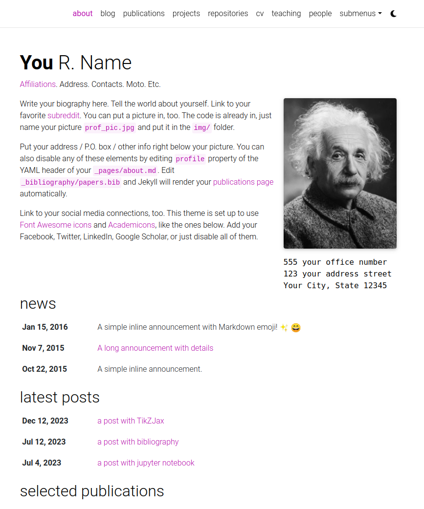
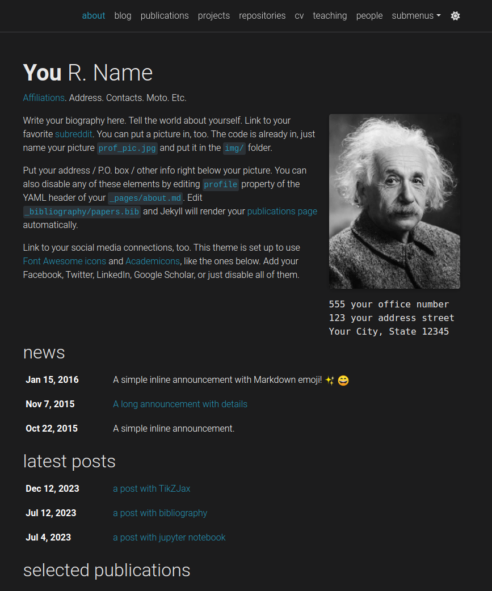

al-folio
al-folio
User community
The vibrant community of al-folio users is growing! Academics around the world use this theme for their homepages, blogs, lab pages, as well as webpages for courses, workshops, conferences, meetups, and more. Check out the community webpages below. Feel free to add your own page(s) by sending a PR.
| Academics | ★ ★ ★ ★ ★ ★ ★ ★ ★ ★ ★ ★ ★ ★ ★ ★ ★ ★ ★ ★ ★ ★ ★ ★ ★ ★ ★ ★ ★ ★ ★ ★ ★ ★ ★ ★ ★ ★ ★ ★ ★ ★ ★ ★ ★ ★ ★ ★ ★ ★ ★ ★ ★ ★ ★ ★ ★ ★ ★ ★ ★ ★ ★ ★ ★ ★ ★ ★ ★ ★ ★ ★ ★ ★ ★ ★ ★ ★ ★ ★ ★ ★ ★ ★ ★ ★ ★ ★ ★ ★ ★ ★ ★ ★ ★ ★ ★ ★ ★ ★ ★ ★ ★ ★ ★ ★ ★ ★ ★ ★ ★ ★ ★ ★ ★ ★ ★ ★ ★ ★ ★ ★ ★ ★ ★ ★ ★ ★ ★ ★ ★ ★ ★ ★ ★ ★ ★ ★ ★ ★ ★ ★ ★ ★ |
| Labs | ★ ★ ★ ★ ★ ★ ★ ★ ★ ★ ★ |
| Courses |
CMU PGM (S-19) CMU DeepRL (S-21, F-21, S-22, F-22, S-23, F-23) CMU MMML (F-20, F-22) CMU AMMML (S-22, S-23) CMU ASI (S-23) CMU Distributed Systems (S-24) |
| Conferences & workshops |
ICLR Blog Post Track (2023, 2024) ML Retrospectives (NeurIPS: 2019, 2020; ICML: 2020) HAMLETS (NeurIPS: 2020) ICBINB (NeurIPS: 2020, 2021) Neural Compression (ICLR: 2021) Score Based Methods (NeurIPS: 2022) Images2Symbols (CogSci: 2022) Medical Robotics Junior Faculty Forum (ISMR: 2023) Beyond Vision: Physics meets AI (ICIAP: 2023) Workshop on Diffusion Models (NeurIPS: 2023) Workshop on Structured Probabilistic Inference & Generative Modeling (ICML: 2023, 2024) |
Lighthouse PageSpeed Insights
Desktop

Run the test yourself: Google Lighthouse PageSpeed Insights
Mobile

Run the test yourself: Google Lighthouse PageSpeed Insights
Table Of Contents
- al-folio
Getting started
⚠️ Important: Use “Use this template” (not fork)
When creating your own website with al-folio, you have two options:
- ✅ Recommended: Click “Use this template” – This creates a clean copy that is independent from the main al-folio repository. Changes you make to your site won’t be accidentally submitted to al-folio as pull requests.
- ❌ Not recommended: Forking the repository – This keeps a link to the main al-folio repo, making it easy to accidentally submit your personal site changes as contributions to our project.
If you already forked: Don’t worry! You can still work with your fork normally. Just make sure to:
- Make changes on a dedicated branch (e.g.,
my-site-updates) - When pushing changes, always verify you’re pushing to your own repository, not the main al-folio repository
- Never create pull requests to
alshedivat/al-foliounless you’re intentionally contributing improvements that benefit all users
For quick setup, see QUICKSTART.md.
Want to learn more about Jekyll? Check out this tutorial. Why Jekyll? Read Andrej Karpathy’s blog post! Why write a blog? Read Rachel Thomas blog post.
Installing and Deploying
For installation and deployment details please refer to INSTALL.md.
Customizing
For customization details please refer to CUSTOMIZE.md.
GitHub Copilot Agents
This repository includes two specialized GitHub Copilot agents to enhance your development experience:
Customization Agent
The Customization Agent helps you personalize your al-folio website by:
- Guiding you through configuration changes step-by-step
- Modifying files directly in your repository
- Explaining technical concepts in plain language (great for users without coding experience)
- Assisting with common tasks like updating your CV, adding publications, creating blog posts, and customizing themes
See CUSTOMIZE.md § GitHub Copilot Customization Agent for detailed usage instructions.
Documentation Agent
The Documentation Agent maintains clear and up-to-date project documentation by:
- Updating documentation files when features change
- Writing in a style accessible to academics and researchers
- Keeping documentation synchronized with the codebase
- Following documentation best practices
See CONTRIBUTING.md § GitHub Copilot Agents for more information.
Requirements: Both agents require a GitHub Copilot subscription. For more information about GitHub Copilot and how to use agents, see the GitHub Copilot documentation.
Documentation
Comprehensive guides for all aspects of your al-folio website:
- Quick Start – Get running in 5 minutes
- Installation & Deployment – Set up your site on GitHub Pages or other platforms
- Customization Guide – Personalize your website (CVs, publications, themes, etc.)
- Troubleshooting – Fix common issues (deployment, build, styling, content)
- FAQ – Frequently asked questions and solutions
- Analytics – Add website analytics and visitor tracking
- SEO Guide – Optimize for search engines and improve discoverability
Features
Light/Dark Mode
This template has a built-in light/dark mode. It detects the user preferred color scheme and automatically switches to it. You can also manually switch between light and dark mode by clicking on the sun/moon icon in the top right corner of the page.


CV
Your CV can be generated in one of two modern formats: RenderCV (recommended, with automatic PDF generation) or JSONResume (standardized JSON format). You can use both simultaneously and switch between them, or maintain just the one you prefer.

For setup and customization details, see Modifying the CV information in CUSTOMIZE.md.
People
You can create a people page if you want to feature more than one person. Each person can have its own short bio, profile picture, and you can also set if every person will appear at the same or opposite sides.

Publications
Your publications page is generated automatically from your BibTeX bibliography. You can customize publication display, add extra information like PDFs, and control sorting behavior.

For setup, BibTeX field documentation, and customization options, see Adding a new publication and Managing publication display in CUSTOMIZE.md.
Collections
This Jekyll theme implements collections to organize content into categories. The theme comes with default collections for news, projects, books, and teachings. You can easily create your own collections for apps, stories, courses, or any other creative work.

For detailed instructions on creating and customizing collections, see Adding Collections in CUSTOMIZE.md.
Layouts
al-folio comes with stylish layouts for pages and blog posts.
The iconic style of Distill
The theme allows you to create blog posts in the distill.pub style:

For more details on how to create distill-styled posts using <d-*> tags, please refer to the example.
Full support for math & code
al-folio supports fast math typesetting through MathJax and code syntax highlighting using GitHub style. Also supports chartjs charts, mermaid diagrams, and TikZ figures.
Photos, Audio, Video and more
Photo formatting is made simple using Bootstrap’s grid system. Easily create beautiful grids within your blog posts and project pages, also with support for video and audio embeds:
Other features
GitHub’s repositories and user stats
al-folio displays GitHub repositories and user stats on the /repositories/ page using github-readme-stats and github-profile-trophy.

To configure which repositories and GitHub profiles to display, see Modifying the user and repository information in CUSTOMIZE.md.
Theming
al-folio offers a variety of beautiful theme colors to choose from. The default is purple, but you can customize colors, fonts, spacing, and more to match your style.
For detailed customization instructions, see Changing theme color and Customizing fonts, spacing, and more in CUSTOMIZE.md.
Social media previews
al-folio supports Open Graph preview images on social media. When enabled, your site’s pages display rich preview objects with images, titles, and descriptions when shared.
For setup and customization, see Social media previews in CUSTOMIZE.md.
Atom (RSS-like) Feed
It generates an Atom (RSS-like) feed of your posts, useful for Atom and RSS readers. The feed is reachable simply by typing after your homepage /feed.xml. E.g. assuming your website mountpoint is the main folder, you can type yourusername.github.io/feed.xml
Related posts
By default, blog posts display related posts at the bottom. These are selected by finding the most recent posts that share tags with the current post. You can customize this behavior on a per-post or site-wide basis.
For configuration details, see Related posts in CUSTOMIZE.md.
Code quality checks
Currently, we run some checks to ensure that the code quality and generated site are good. The checks are done using GitHub Actions and the following tools:
- Prettier - check if the formatting of the code follows the style guide
- lychee - check for broken links
- Axe (need to run manually) - do some accessibility testing
We decided to keep Axe runs manual because fixing the issues are not straightforward and might be hard for people without web development knowledge.
GDPR Cookie Consent Dialog
al-folio includes a built-in, GDPR-compliant cookie consent dialog to ensure your website respects visitor privacy. The dialog is powered by Vanilla Cookie Consent and integrates seamlessly with all supported analytics providers.
When enabled, analytics scripts are blocked until the user explicitly consents, and user preferences are saved across visits. This is essential for websites serving visitors in the European Union and other regions with strict privacy regulations.
For complete setup and customization details, see GDPR Cookie Consent Dialog in CUSTOMIZE.md.
FAQ
For frequently asked questions, please refer to FAQ.md.
Contributing
Contributions to al-folio are very welcome! Before you get started, please take a look at the guidelines.
If you would like to improve documentation or fix a minor inconsistency or bug, please feel free to send a PR directly to main. For more complex issues/bugs or feature requests, please open an issue using the appropriate template.
Maintainers
Our most active contributors are welcome to join the maintainers team. If you are interested, please reach out!
 Maruan |
 Rohan Deb Sarkar |
 Amir Pourmand |
 George |
All Contributors
Star History
</a>
License
The theme is available as open source under the terms of the MIT License.
Originally, al-folio was based on the *folio theme (published by Lia Bogoev and under the MIT license). Since then, it got a full re-write of the styles and many additional cool features.